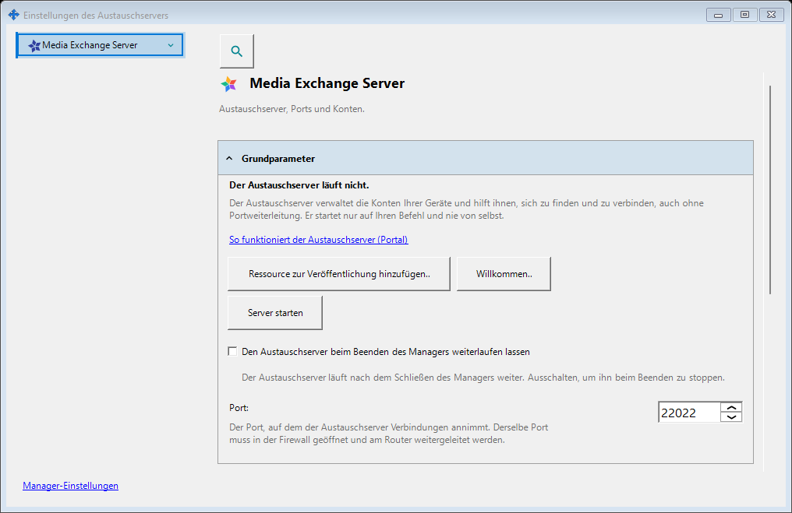
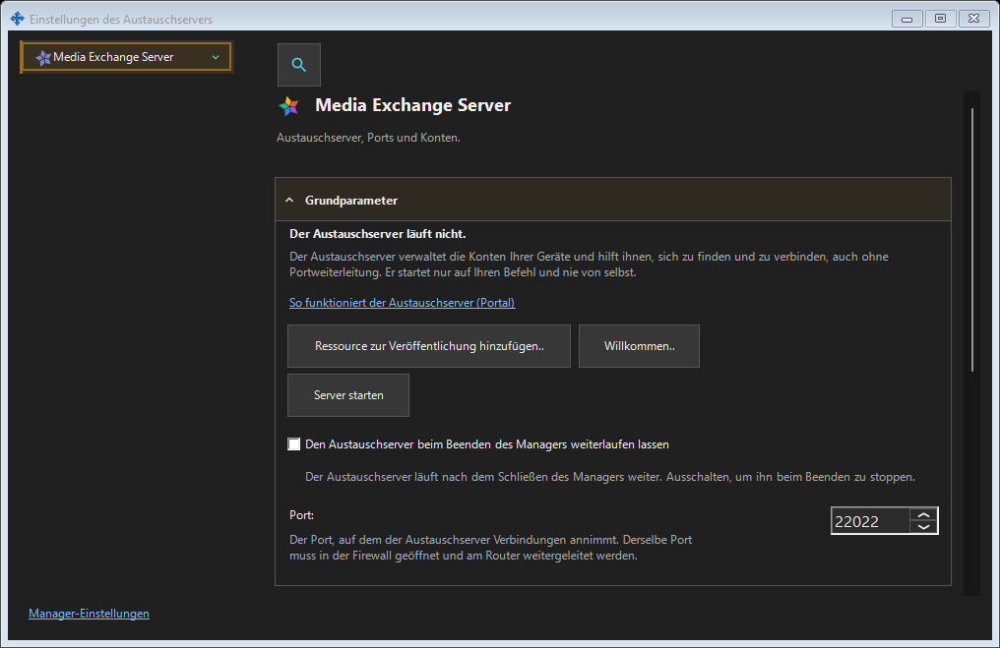

Einstellungen des Austauschservers
Verwendungszweck
SFTP: Port, Verbindungslimit, LAN-Richtlinie und Betrieb als Windows-Dienst. Austauschserver: Adresse, TLS, Konten, Geräte, Einladungen, Dienst, Protokolle und Fernverwaltung.


In dieser Reihenfolge
Öffnen Sie die Einstellungen über das Tray oder die Komponentenlinks. Öffnen und Schließen starten oder stoppen keinen Server. Ein fehlender lokaler Server sperrt die entfernte Anmeldung nicht.
Die Elemente
Einstellungen des Austauschservers
SFTP: Port, Verbindungslimit, LAN-Richtlinie und Betrieb als Windows-Dienst. Austauschserver: Adresse, TLS, Konten, Geräte, Einladungen, Dienst, Protokolle und Fernverwaltung. Öffnen Sie die Einstellungen über das Tray oder die Komponentenlinks. Öffnen und Schließen starten oder stoppen keinen Server. Ein fehlender lokaler Server sperrt die entfernte Anmeldung nicht.
Managereinstellungen · SFTP-Freigabeeinstellungen · Einstellungen des Austauschservers